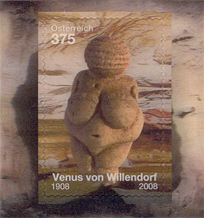
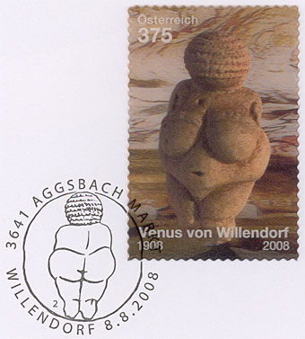
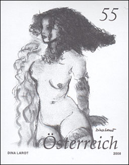
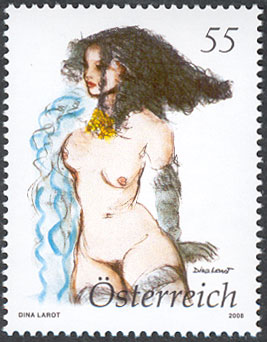

The Timeless Language of Fertility and Elegance
The Willendorf Venus - three dimensional!
The Willendorf Venus is Austria's most famous and valuable find from the later Paleolithic age. A very special stamp has been created for this outstanding object. A three-dimensional effect makes the Venus appear particularly vividly. There is no doubt that this innovative lenticular image stamp is a further milestone in contemporary stamp design.
The Venus sculpture was created for 25,000 years. It was found in Willendorf in the Wachau on 7 August 1908. The figure is 11 cm high, made of fine limestone and has survived almost undamaged. It shows a corpulent naked woman. Wide hips, protruding stomach and heavy breasts are the characteristics of her appearance. Her arms are only suggested, her wrists decorated with serrated bracelets. The upper and lower legs are natural in form, the feet are missing. Her weak shoulders bear a large head bending slightly forward, without a face, almost entirely decorated with a complicated hairstyle made up of rows of ringlets reaching deep into the back of her neck. Residues of color indicate that the sculpture was originally painted with thick red chalk. The original is exhibited at the Vienna Natural History Museum.


The village of Willendorf lies on the left bank of the Danube. During the later Paleolithic age, the slopes of the Danube valley were the hunting ground of the ice age hunters. In summer 1908, the Imperial Natural History Museum, under the direction of Josef Szombathy, was carrying out systematic excavations. Particular attention was paid to the Willendorf II site, which lay in the area of the route of the Danube Bank Railway. Of the seven known sites, Willendorf II is certainly the most important and one of the most significant for Paleolithic research in central Europe. The limestone figure was found in the ninth occupation later, and was next to a large hearth with charcoal residues. 19 years later, the 19 cm large Venus II, carved from a mammoth’s tusk, was found only a few meters from the first site.
Of all 130 Venus statuettes found in Europe and Asia, the Willendorf Venus is the most attractive and the oldest -- and above all a figure that has survived complete. The find caused a world sensation in expert circles. The figure has remarkably many similarities with Eastern European statuettes, all sharing an emphasis on the sexual characteristics. What is special is that all of these archaeological finds are subject to the same geometrical principle: they can be circumscribed by a rhombus with remarkable accuracy.
The Venus statuettes are regarded as symbols of fertility. The corpulence may also be an expression of the desire for sufficient food and good fortune in hunting. Another remarkable feature is that all the statuettes found to date originated from permanent settlements.
Not by chance, the miniature sheet was released on 08|08/2008. The back of the statuette is shown on the first day cancel (above, on the right)Nude on stamp - Female nude
The designer of the stamp, Dina Larot, was born in Vienna on 6 January 1942. She started studying art at Graz under Prof. Rudolf Szyskowitz. At the 1962 Summer Academy, she met the great Austrian painter Oskar Kokoschka, who left a lasting impression on her painting and drawing. She subsequently created views of the city of Graz, landscapes of southern Styria and her first nudes using models.
Although her artistic creativity covers a broad range of topics, the focal point of Dina Larot’s work is without doubt the attractive nudes and pictures of young women. “Larot’s paintings communicate the joy of being a woman and of love,” to quote the sex therapist and psychologist Dr. Gerti Senger, “Her works show not only the beauty of female bodies, they also tell stories of tenderness and yearning, of innocence and seduction.” Larot’s works are dominated by a strong but quiet eroticism, and even in the most daring poses the representations always speak the language of elegance.


Confident young women, fully aware of their bodies and their nakedness, without timidity, proud to be sitting for the painter. The result is paintings full of joie de vivre, ambassadors of feminine beauty, as it were. In her own unmistakable pictorial language, Dina Larot interprets the multi-facetted and subtle emotions of female fantasy.
“A day without painting is a lost day” is the artist’s motto. “Through painting I create my own world, in the form in which I would have liked it” - a consistent romanticist credo, which helps us to identify artist's subjects and to understand her work.
Text after: Austria Post (many thanks for the interesting issues!)By chance this nice stamp was issued on my birthday anniversary: 09|19/2008. The image on the left is a so-called black print, imperforated. It is not a valid postal stamp (but it is more expensive then the colored original).
Comments
The 3-D sheet is impressive. Even if its technology is not "innovative", following the path of some 30 years old stamps of Bhutan etc., it is nice to see it reappearing at a much more serious PA.
Of course we prefer by far Ms. Larot's contemporary Venus but we also understand that without her Willendorf's ancestors she couldn't exist.
Links to pages on this site